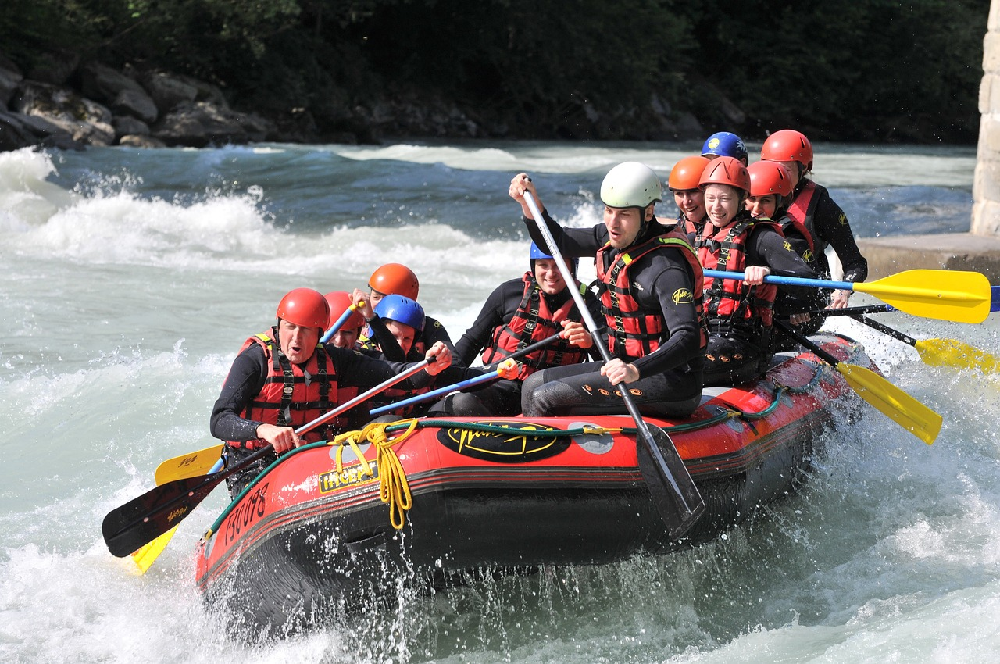
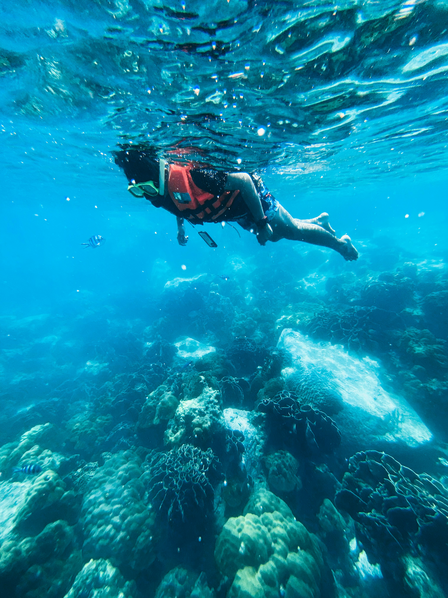
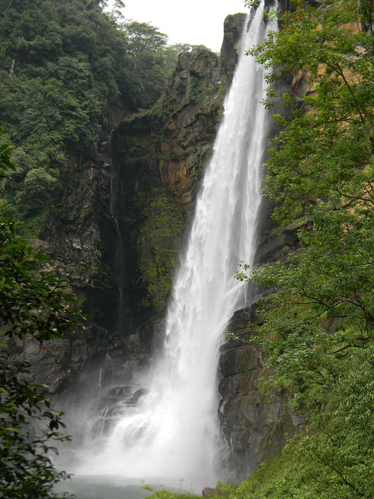
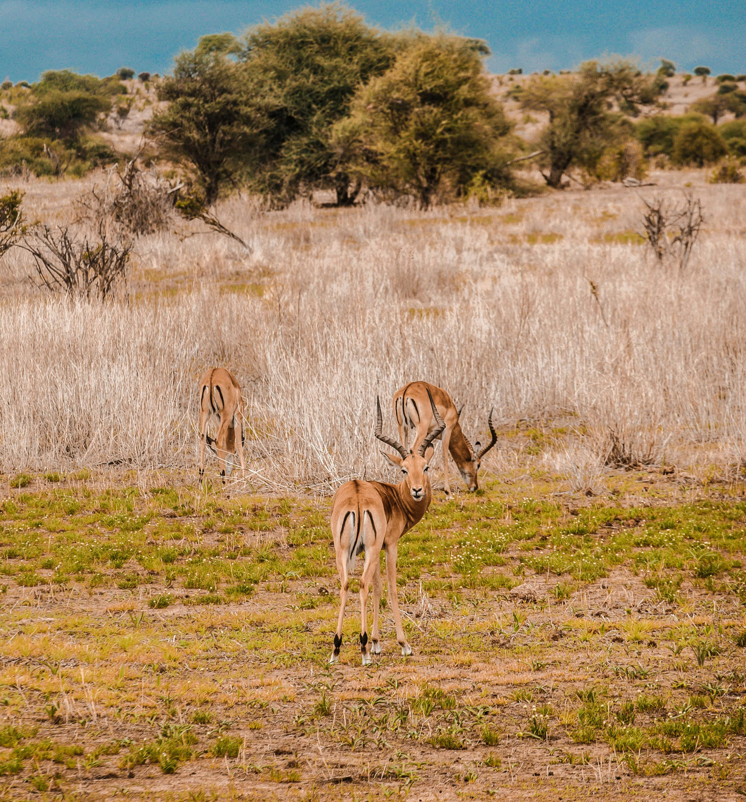
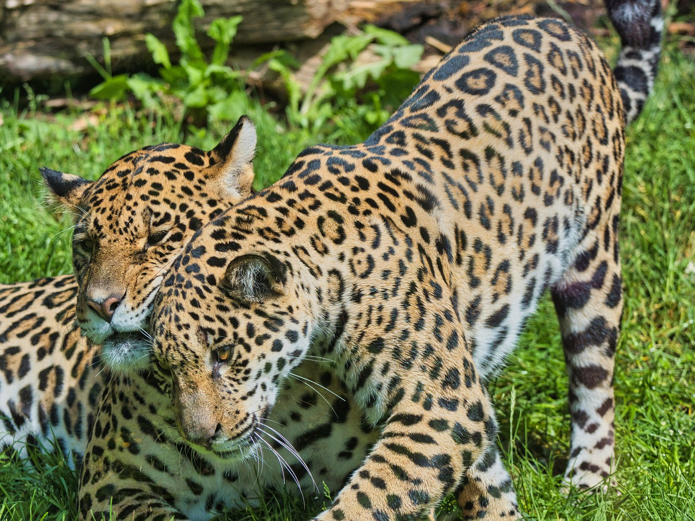
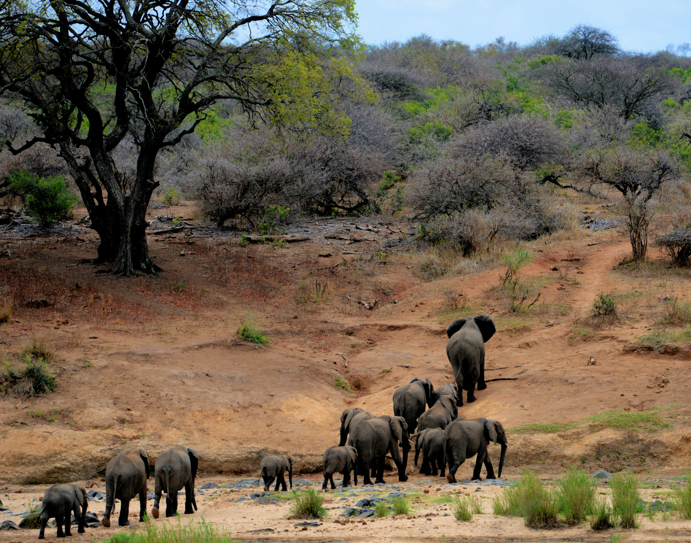
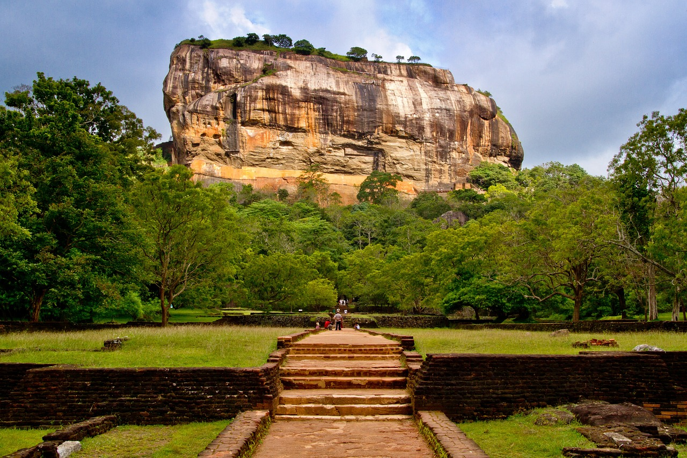
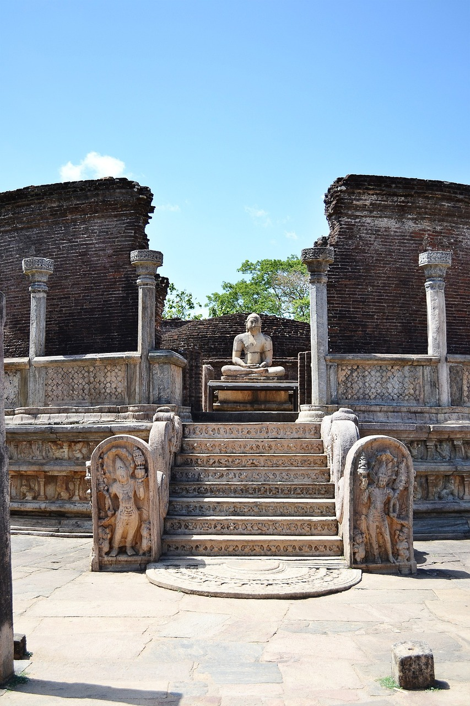

Unveiling Sri Lanka's Epic Adventures: Must-Try Experiences for Thrill-Seekers!
Hiking and Trekking in Sri Lanka
For those who enjoy the great outdoors, Sri Lanka provides an abundance of hiking and trekking opportunities due to its varied topography, which includes misty highlands and coastal plains. Sri Lanka has much to offer everyone, regardless of your level of experience: from nature enthusiasts wanting easy strolls amidst stunning scenery to seasoned trekkers seeking demanding treks. An thorough guide to trekking and hiking in the island nation may be found here:
-
Ella Rock:

Ella Rock Location: Ella, a charming town tucked away in Sri Lanka's middle highlands.
Trail Description: With its breathtaking vistas of lush valleys, tea plantations, and waterfalls, the journey to Ella Rock is one of Sri Lanka's most well-liked hikes. Before reaching the peak, the walk winds through verdant forests and charming villages near Ella Railway Station.
Distance: The approximate round-trip distance is 8–10 kilometers.
Difficulty: Moderate in difficulty. The trail has some steep sections that demand careful navigation even though it is generally well-marked.
Highlights: Along the walk lies the famous Nine Arch Bridge, an amazing piece of architecture. Don't miss it. With its beautiful surroundings, the bridge makes for great photo ops.
-
Adam's Peak (Sri Pada):

Adam's Peak Location: Close to the town of Hatton in Sri Lanka's Central Highlands.
Trail Description: For individuals of many faiths, climbing to the top of Adam's Peak is a revered pilgrimage. The trailhead is located in Dalhousie, and it has more than 5,000 steps that up to the summit. Trekkers and pilgrims enjoy breath-taking scenery and spiritual experiences along the route.
Distance: About 7 km in either direction.
Difficulty: A challenging task. It can be a taxing climb, particularly in the summer when pilgrims swarm the mountain in large numbers.
Highlights: Climb to the top before sunrise to see the breathtaking sunrise and the mysterious "Sri Pada," or "sacred footprint," which, depending on your religion, is thought to be the impression of Lord Shiva, Lord Buddha, or Adam.
-
Knuckles Mountain Range:

Knuckles Mountain Range Location: In Sri Lanka's Central Province, close to Kandy.
Trail Description: Winding through pristine woods, gushing waterfalls, and secluded communities, the Knuckles Mountain Range gets its name from its likeness to a clinched fist. A pleasant experience, trekking in the Knuckles offers the chance to see rare wildlife and plants.
Distance: Varies based on the path selected. There are both one-day walks and multi-day treks available.
Difficulty: Moderate to difficult. While some paths offer more leisurely walks, others may necessitate crossing rivers and steep ascents.
Highlights: Take in the expansive views of the surrounding mountains and valleys from the picturesque viewpoint known as the Mini World's End. For those looking for a more immersed experience, there are possibilities for overnight camping.
Essential Tips for Hiking and Trekking in Sri Lanka:
- Prepare Adequately: Don a cap, light clothing, and comfy hiking shoes. Carry along lots of water, food, insect repellant, and sunscreen.
- Plan Accordingly: Before starting a hike, check the trail conditions and weather prediction. In particular during the busiest times of the year, get an early start to beat the heat and the throng.
- Respect Nature: Respect nature by adhering to authorized trails, not littering, and showing consideration for the surrounding fauna and communities. Take only pictures and leave no sign of your visit.
- Safety first: When hiking, especially in remote places, go with knowledgeable guides or experienced hiking partners. Tell someone about your itinerary and when you plan to return. Take altitude sickness seriously, especially if you're traveling to higher altitudes.
Resources for Hiking and Trekking:
- TrailSL: TrailSL is an online resource with comprehensive data, maps, and reviews about Sri Lanka's hiking routes. It provides insightful information about the trail's difficulty, accessibility, and nearby sites of interest.
- Adventure Lanka Travels: Including well-known locations like Ella, Adam's Peak, and the Knuckles Range, Adventure Lanka Travels provides guided hiking and trekking vacations around Sri Lanka. A memorable and safe adventure is guaranteed by knowledgeable guides.
- Explore Sri Lanka: With possibilities for personalized itineraries and engaging cultural exchanges, Explore Sri Lanka offers carefully chosen hiking and trekking experiences throughout the country. Along with local experts, discover off-the-beaten-path treks and hidden gems.
Water Adventures in Sri Lanka
Encircled by the crystal-clear waters of the Indian Ocean and graced with picturesque rivers, waterfalls, and lakes, Sri Lanka provides an abundance of aquatic experiences for both nature enthusiasts and thrill-seekers. The island nation offers countless opportunity to enjoy its aquatic beauties, from whale watching and white-water rafting to surfing and diving. Everything you need to know about water activities in Sri Lanka is provided below:
-
Surfing in Arugam Bay:

Arugam Bay Location: Ampara district, on Sri Lanka's southeast coast.
Surfing Highlights: Renowned for having some of the best waves in Asia, Arugam Bay caters to surfers of all abilities with its world-class waves. The bay is a favored spot for surfers and beach lovers because of its steady breakers, sandy beaches, and relaxed vibe.
Surfing Season: Arugam Bay's major surfing season spans from May to October, with June through August usually having the best waves. The dominant southwest monsoon at this time of year produces steady swells and offshore winds that make for perfect surfing conditions.
Surf Spots: Be sure to visit well-known surf breaks such as Main Point, Elephant Rock, and Whiskey Point, which provide distinct wave features and experiences for surfers of varying skill levels.
-
White Water Rafting in Kitulgala:

Water Rafting in Kitulgala Location: In the district of Kegalle in central Sri Lanka.
Rafting Highlights: The adventure capital of Sri Lanka is Kitulgala, which is well-known for its exhilarating white-water rafting excursions on the Kelani River. Sail through thrilling rapids, breathtaking gorges, and verdant rainforest scenery as you set out on an unforgettable whitewater rafting experience.
Rafting Routes: There are numerous options for rafting courses, from easy sections for novices to difficult rapids for skilled paddlers. The most well-traveled route is around 7 kilometers long and has heart-pounding rapids like "Killer Falls" and "Butter Crunch."
Rafting Season: Although white-water rafting is possible all year round at Kitulgala, the finest conditions for rafting are found from May to December, during the wet season, when rapids and water levels are higher.
-
Whale Watching in Mirissa:

Whale Watching in Mirissa Location: Sri Lanka's southern coast, close to the town of Mirissa.
Whale Watching Highlights: Observing gorgeous blue whales, sperm whales, and dolphins in their natural habitat may be had in Mirissa, one of the world's top whale-watching spots. Set off from Mirissa Harbor on a whale-watching excursion to seek for these amazing underwater animals as you cruise the coast.
Whale Watching Season: When whales migrate from the Antarctic region to the waters off Sri Lanka's southern coast, the waters serve as feeding grounds, making December to April the busiest time of year to go whale watching in Mirissa. The largest mammals on Earth, blue whales, are very common to see around this season.
Other Marine Life: Watch out for playful dolphins, such as spinner and bottlenose dolphins, who are frequently seen splashing around in the waves next to boats, in addition to whales.
-
Snorkeling and Diving in Hikkaduwa:

Diving in Hikkaduwa Location: Galle district, Sri Lanka's southwest coast.
Diving Highlights: The brilliant coral reefs, tropical fish, and other undersea treasures of Hikkaduwa's dynamic marine ecology are a sight to behold. On fascinating diving and snorkeling tours, discover the coral gardens, shipwrecks, and underwater rock formations of Hikkaduwa.
Diving Sites: Hikkaduwa offers a variety of diving sites to satisfy the needs of all skill levels, from shallow reefs for novices to deeper locations with potential for experienced divers. The Conch Shipwreck, which is home to a variety of marine life, Coral Garden, Kiralagala Reef, and Kiralagala Reef are popular diving destinations.
Marine Conservation: The coral reefs of Hikkaduwa are protected as part of a marine environment, and restoration and conservation work is being done on these delicate ecosystems. To contribute to the preservation of the marine environment for future generations, dive sensibly and according to sustainable diving techniques.
-
Chasing Waterfalls:

Bambarakanda waterfall Waterfall Highlights: Stunning waterfalls may be found all around Sri Lanka, providing serene escapes and breathtaking scenery amidst verdant surroundings. The tallest waterfall in Sri Lanka, Bambarakanda Falls, the second-highest waterfall in Diyaluma Falls, and the mythological Ravana Falls, which is surrounded by beautiful scenery, are a few of the must-see waterfalls.
Waterfall Adventures: Take swimming trips, photography tours, and treks to get a closer look at these natural treasures. Numerous waterfalls are tucked away in isolated areas and can be reached via beautiful hiking paths and off-the-beaten-path explorations.
Safety Precautions: Be cautious and abide by safety precautions when visiting waterfalls, particularly during the rainy season when water levels can rise quickly. Steer clear of choppy waters and pay attention to local authorities' warnings.
Essential Tips for Water Adventures:
-
Safety First: Put safety first by donning the proper gear, paying attention to the instructors' instructions, and monitoring the water's conditions.
-
Respect Marine Life: Refrain from touching or upsetting fish and coral when diving and snorkeling. Reduce the amount of damage you cause to the aquatic environment by following proper reef etiquette.
-
Stay Hydrated: Stay hydrated by drinking lots of water, especially when engaging in hot, muggy outdoor activities.
- Protect the Environment: For the sake of future generations, help protect Sri Lanka's natural beauty by supporting eco-friendly tourism, avoiding single-use plastics, and appropriately disposing of rubbish.
Safari Adventures in Sri Lanka
Sri Lanka, sometimes called the "Pearl of the Indian Ocean," is a nature lover's dream come true. The island nation is home to a remarkable variety of flora and animals due to its different ecosystems, which range from deep jungles to coastal marshes. Taking a wildlife safari in Sri Lanka gives you the chance to see intriguing animals like elusive leopards, colossal elephants, and vibrant birds in their natural environments. Here is all the information you require regarding wildlife safari experiences in Sri Lanka:
-
Yala National Park:

Yala National Park Location: The Hambantota district in southeast Sri Lanka.
Wildlife Highlights: Yala National Park is one of the best places in the world to see elusive big cats, leopards, due to its high density of these elusive animals. A wide range of bird species, elephants, sloth bears, spotted deer, and wild boar are among the other wildlife species that are frequently sighted in Yala.
Safari Experience: Take an exhilarating jeep safari through Yala with knowledgeable guides who are adept at locating wildlife. The park is split into five blocks, with Block 1 being the most well-liked for safari excursions because of how many leopards and other animals live there.
Best Time to Visit: Because animals concentrate around water sources during the dry season, which runs from May to September, it is said to be the greatest time to go on a wildlife safari in Yala.
-
Wilpattu National Park:

Wilpattu National Park Location: Puttalam district in northwest Sri Lanka.
Wildlife Highlights: Wilpattu National Park is renowned for its untainted nature and abundant wildlife, which includes a wide range of bird species, sloth bears, elephants, and leopards. Numerous species of animals find perfect homes in the park's vast grasslands, natural lakes (villus), and deep forests.
Safari Experience: Take a jeep safari through Wilpattu to learn about the park's stunning scenery and possibly spot wildlife. Compared to Yala, the park is less congested, making for a more peaceful and engaging safari experience.
Best Time to Visit: The greatest time to visit Wilpattu is during the dry season, which runs from February to October. This is because there is less vegetation during this period, which makes it easier to see wildlife.
-
Udawalawe National Park:

Udawalawe National Park Location: The districts of Ratnapura and Monaragala are in southern Sri Lanka.
Wildlife Highlights: The vast population of wild elephants at Udawalawe National Park is well known, and visitors can frequently witness them bathing and feeding close to the park's reservoir. In addition to the aforementioned animals, Udawalawe is home to crocodiles, water buffalo, sambar deer, and several bird species.
Safari Experience: Take a jeep safari through the grasslands and scrub woodlands of Udawalawe, guided by experienced guides who can share their expertise of the park's fauna and ecosystem. Boat excursions on the Udawalawe reservoir provide exceptional chances to see aquatic life and birds.
Best Time to Visit: The greatest time to visit Udawalawe is during the dry season, which runs from May to September. This period offers the highest possibilities of seeing elephants and other species congregating around water sources. However, wildlife viewing is superb all year round.
-
Other Wildlife Destinations:
Minneriya National Park: Well-known for hosting "The Gathering," a yearly gathering of wild elephants that takes place from June to September.
Wasgamuwa National Park: Wildlife abounds at Wasgamuwa National Park, which is home to endemic bird species, sloth bears, elephants, and leopards.
Kumana National Park: With over 200 species of birds, including migratory species from as far away as Siberia and Scandinavia, Kumana National Park is a birdwatcher's delight.
Essential Tips for Wildlife Safaris:
-
Book in Advance: During the busiest times of the year, Sri Lanka's wildlife safaris are a well-liked attraction. To ensure your space, it's best to reserve safari tours and lodging in advance.
-
Respect Wildlife: Keep a safe distance from animals and refrain from interfering with their natural behaviors. For a responsible and moral wildlife viewing experience, heed the advice of your safari guide.
-
Pack Essentials: Bring plenty of water, sunscreen, insect repellent, a camera with a zoom lens, and binoculars. To fit in with the environment and prevent frightening wildlife, dress in neutral hues.
- Follow Park Rules: Learn about the national parks' policies and guidelines, such as designated pathways, speed limits, and forbidden activities. Leave no evidence of your stay and treat the environment with respect.
Recommended Safari Operators:
-
Safari Lanka: A top supplier of wildlife safari excursions in Sri Lanka, with knowledgeable guides and personalized itineraries.
-
Lanka Holidays: Specializes in planning safari trips to well-known national parks like as Udawalawe, Wilpattu, and Yala.
- Sri Lanka Expedition: Provides a variety of safari packages, such as camping trips, birdwatching excursions, and jeep safaris.
Cultural Adventures in Sri Lanka
A country rich in history and culture, Sri Lanka welcomes visitors who are keen to discover its historic temples, colonial buildings, traditional crafts, and colorful festivals. The island nation welcomes visitors to immerse themselves in its rich cultural heritage, which includes both UNESCO World Heritage sites and real local settlements. This is a thorough introduction to Sri Lanka's cultural adventures:
-
Sigiriya Rock Fortress:

Sigiriya Rock Fortress Location: Dambulla, close to the Central Province of Sri Lanka.
Historical Importance: Sigiriya, sometimes referred to as the Lion Rock, is a UNESCO World Heritage Site that is an old rock stronghold that dates back to the fifth century AD. Ascend Sigiriya's peak to take in the breath-taking vistas of the surrounding countryside and the ruins of an old palace and fortification complex.
Marvels of Architecture: Discover the water gardens, frescoes, and beautifully designed gardens that grace Sigiriya's hillsides. Cultural aficionados should not miss the location because of its remarkable natural beauty and cultural and historical relevance.
-
Ancient Cities of Anuradhapura and Polonnaruwa:

Anuradhapura 
Polonnaruwa Location: Sri Lanka, North Central Province.
Historical Heritage: Two of Sri Lanka's former capital cities, Anuradhapura and Polonnaruwa, are home to a multitude of religious structures and archaeological artifacts. Discover Sri Lanka's rich Buddhist legacy and architectural prowess by touring the ruins of old palaces, stupas, dagobas, and monastic complexes.
Sacred places: Travel to some of the most respected Buddhist places in history, including Jetavanaramaya, Abhayagiriya, and Ruwanwelisaya Dagoba, which are all renowned for their spiritual significance and magnificent architecture.
-
Kandy Cultural Show:

Kandy Cultural Show Location: Kandy, in the Central Province of Sri Lanka.
Cultural Extravaganza: The Kandy Cultural Show features traditional music, dance, and folklore, allowing you to fully immerse yourself in Sri Lanka's diverse cultural heritage. Experience exciting demonstrations of fire-dancing, drumming, and indigenous ceremonies that have been passed down through the years.
Cultural Heritage: The Kandy Cultural Show provides an insight into the rich and varied cultural legacy of Sri Lanka, encompassing colonial-era customs, Tamil, and Sinhalese influences. Enjoy a wonderful evening of entertainment as you take in the rhythm and splendor of Sri Lankan culture.
-
Temple of the Tooth Relic (Sri Dalada Maligawa):

Temple of the Tooth Location: Kandy, in the Central Province of Sri Lanka.
Spiritual Center: One of Sri Lanka's holiest Buddhist temples, the Temple of the Tooth Relic is home to a treasured relic thought to be the tooth of Lord Buddha. Admire the temple complex, which is embellished with elaborate woodcarvings, gilded sculptures, and vibrant murals portraying Buddhist legends, and pay respect to the holy tooth relic.
Cultural Festivals: Enjoy the colorful processions and cultural events held at the Temple of the Tooth Relic. One such festival is the Esala Perahera, which honors the tooth relic every year with bright parades, traditional music, and ceremonial rites.
-
Traditional Village Experience:

Traditional Sri Lankan handicrafts Location: A number of remote Sri Lankan villages.
Authentic Encounters: Take part in age-old customs and rituals, engage with local communities, and learn traditional crafts and cooking techniques by embarking on a cultural immersion experience in a traditional Sri Lankan hamlet. As you interact with villagers and learn about their way of life, you will encounter the kindness and hospitality of Sri Lankan village life.
Activities: After participating in crafts like ceramics creation, coconut husking, and traditional culinary demonstrations, have a delectable dinner made with ingredients that are found locally. Participate in storytelling sessions, traditional dances, and cultural displays that highlight the rich rural Sri Lankan history.
-
Colonial Heritage in Galle Fort:

Galle Fort Location: Galle, in the Southern Province of Sri Lanka.
Historical Landmark: Take in Galle Fort's colonial grandeur as it is preserved as a UNESCO World Heritage Site, honoring Sri Lanka's colonial past. Explore charming cafes, boutique stores, Dutch-colonial buildings, and art galleries that convey a sense of old-world charm as you stroll down cobblestone streets.
Famous Attractions: Explore the famous Galle Lighthouse, the 17th-century Dutch Reformed Church, and the lovely ramparts with their expansive views of the Indian Ocean, among other famous sites within Galle Fort. Discover the marine Archaeology Museum, which features items from the colonial and marine histories of Sri Lanka.
Essential Tips for Cultural Adventures:
- Respect Local Customs: Dress modestly and follow local traditions when visiting places of worship and cultural attractions. When visiting temples and other places of worship, take off your shoes, and don't take pictures or handle religious objects without permission.
- Support Local Communities: Select eco-friendly travel agencies and lodgings that support regional economies and give priority to sustainable tourism practices. To support local lives, buy handicrafts and souvenirs directly from craftspeople.
- Learn from Locals: Talk to locals, artists, and tour guides to gain firsthand knowledge about Sri Lanka's cultural legacy. Spend some time learning about their way of life, asking questions, and listening to their tales.
- Practice Responsible Tourism: Make sure you leave no record of your visit and reduce your impact on the environment by correctly disposing of garbage, using less water and energy, and showing respect for wildlife and natural areas.